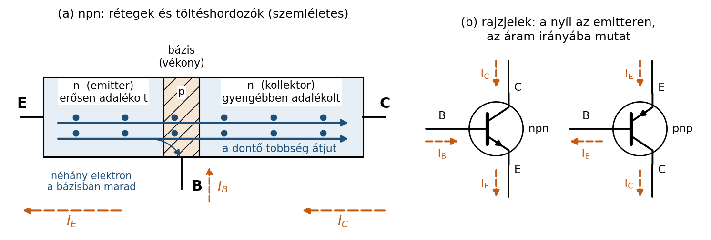
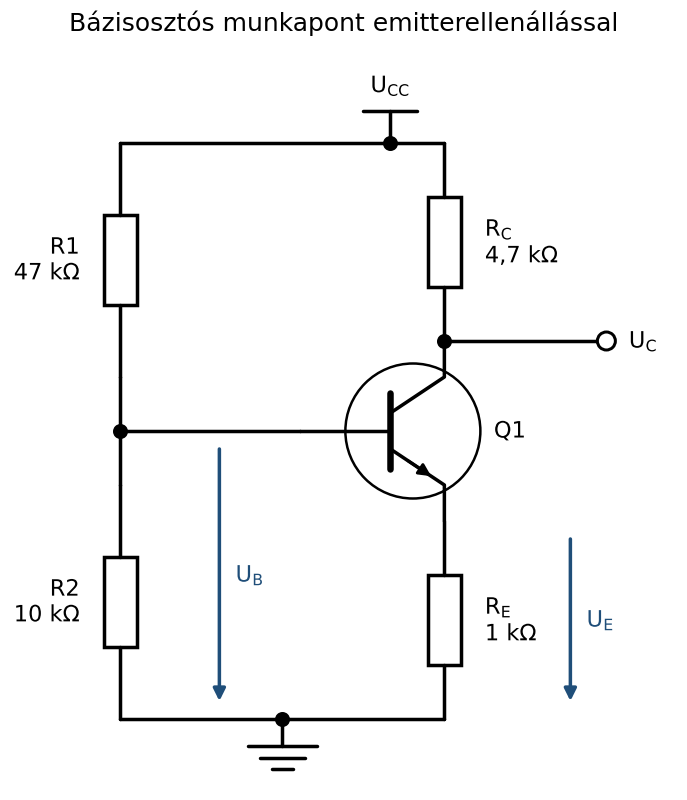
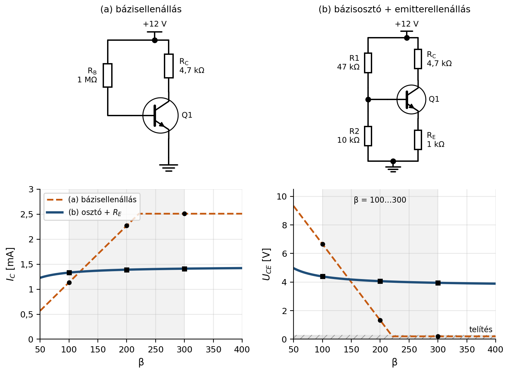

Az alfejezet végére megérted, hogyan vezérel egy kis
bázisáram egy nagyobb kollektoráramot;
egy kapcsolási rajzon eldöntöd, melyik működési tartományban dolgozik a
tranzisztor, és kiszámolod a munkapontját; végül olyan
munkapont-beállítást tervezel, amely nem borul fel attól, hogy két
azonos típusú tranzisztor nem egyforma.
14.1.1 Motiváció
A szenzormodul mikrovezérlőjének egy lába mintaadat szerint
legfeljebb 8 mA-t adhat, a 12 V-os relé tekercse viszont 30 mA-t vesz
fel, és más feszültségről jár. Egy gyenge, 3,3 V-os jellel kell tehát
egy erősebb, 12 V-os áramkört vezérelni. Ugyanez az alkatrész más
beállítással kis váltakozó jelet erősít fel. A bipoláris
tranzisztor (bipolar junction transistor, BJT) mindkettőre
képes: egyszer kapcsolóként (A BJT mint
kapcsoló), máskor erősítőként (Erősítő
alapkapcsolások és a kisjelű modell). Mindkét szerephez először azt
kell tudni, hol áll a tranzisztor: mekkora áramok
folynak benne és mekkora feszültség esik rajta. Ez a
munkapont (operating point).
14.1.2 Szemlélet
14.1.2.1 Három réteg, három
kivezetés
A pn-átmenet (A pn-átmenet és a dióda
karakterisztikája) két adalékolt réteg határa volt. A BJT három
rétegből áll: az npn típusban n–p–n sorrendben, a
pnp típusban fordítva. A három kivezetés neve
emitter (E, „kibocsátó”), bázis (B, a
középső, nagyon vékony réteg) és kollektor (C,
„gyűjtő”).

Az npn tranzisztor szemléletes felépítése és az npn, pnp
rajzjel az áramok technikai irányával
Az npn működése három lépésben:
A bázis–emitter átmenetet nyitóirányba feszítjük
elő
().
Ez egy dióda: az emitterből rengeteg elektron indul a bázisba.
A bázis olyan vékony, hogy az elektronok döntő többsége nem talál
ott „párt”, hanem átsodródik a másik, záróirányban álló
bázis–kollektor átmenetig, ott pedig a térerő behúzza a
kollektorba.
Csak néhány elektron marad a bázisban; ezeket a bázisáram
pótolja.
Az eredmény: a kis
bázisáram jelenléte egy sokszor nagyobb
kollektoráramot tesz lehetővé. Fontos: a tranzisztor nem
termel energiát vagy áramot. A kollektoráram a tápegységből
jön, a bázis csak azt szabályozza, mennyi folyhat – mint egy csap
fogantyúja, amelyet kis erővel mozgatsz, de a víz a vízvezetékből
érkezik. Az analógia korlátai: a „csap” csak egy irányba enged, a
fogantyú maga is vesz fel áramot, és a nyitása nem arányos a fogantyúra
adott feszültséggel.
Két egymásnak fordított diódából nem lesz
tranzisztor: két külön diódában a bázis nem közös, vékony réteg, ezért
az elektronok nem jutnak át a másik diódába.
A rajzjelen a nyíl mindig az emitteren van, és a
bázis–emitter dióda technikai áramirányát mutatja: npn-nél a nyíl kifelé
mutat (a bázisból az emitter felé folyik az áram), pnp-nél befelé. A pnp
mindenben tükörkép: a polaritások és az áramirányok megfordulnak, az
emittere a pozitívabb pont.
14.1.2.2 Három működési
tartomány
Lezárt (cut-off): a bázis–emitter dióda nem vezet,
,
ezért
.
A tranzisztor nyitott kapcsolóhoz hasonlít.
Aktív (active): a bázis–emitter dióda vezet, a
bázis–kollektor átmenet zárva van. A kollektoráramot a bázisáram szabja
meg. Itt dolgozik az erősítő.
Telítés (saturation): a külső áramkör kevesebb
kollektoráramot enged, mint amennyit a bázisáram „kérne”. A
feszültség néhány tized voltra esik
(,
a könyvben ≈ 0,2 V). A tranzisztor zárt kapcsolóhoz hasonlít.
14.1.3 Formalizmus
14.1.3.1 Áramok és az áramerősítési
tényező
A tranzisztorba befolyó áramok összege Kirchhoff csomóponti törvénye
szerint nulla, npn-nél:
Szavakban: ami a bázison és a kollektoron befolyik, az az emitteren
folyik ki.
Definíció. Az egyenáramú áramerősítési
tényező
az aktív tartományban; az adatlapokban
néven szerepel. Dimenziótlan (A/A).
Ebből
és
.
Mivel
tipikusan száz körüli vagy nagyobb, a mindennapi becslésben
.
Ez csak az aktív tartományban igaz.
A
nem pontos érték. Egy mintaadatlapon például ennyi áll:
(
= néhány mA, 25 °C). A szórás háromszoros, ráadásul a
a hőmérséklettel jellemzően nő, és függ a kollektoráramtól is (nagyon
kis és nagyon nagy áramon csökken). Ezért a tervezés alapszabálya:
a kapcsolás ne számítson a pontos
-ra,
csak arra, hogy legalább
.
Ez a „garantált értékre tervezz, ne tipikusra” elv.
14.1.3.2 A bázis–emitter dióda
Az aktív tartományban a kollektoráram a bázis–emitter feszültségtől
exponenciálisan függ, a diódánál megismert Shockley-egyenlethez
hasonlóan:
nagyon kicsi, tranzisztorfüggő telítési áram. Következmény: 60 mV-tal
nagyobb
körülbelül tízszeres
-t
jelent. Ezért a bázist nem feszültséggel, hanem ellenálláson át
meghajtjuk, és a számításban
állandó értékkel dolgozunk. Állandó
mellett
hőfoka kb.
.
A teljesebb Ebers–Moll- és Gummel–Poon-modell ennek finomítása; a
könyvben nem kell.
14.1.3.3 Terhelési egyenes a
görbeseregen
Ha az emitter a földön van, és a kollektor egy
ellenálláson át a
tápra kapcsolódik, Kirchhoff huroktörvénye:
Ez a terhelési egyenes (Nemlineáris elemek és a
munkapont): a külső áramkör ennyit „enged”. A tranzisztor viszont a
kimeneti karakterisztikán (adott
-hez
tartozó
görbén) van. A munkapont a kettő metszéspontja.
Statikus változat (mint a PDF-ben)
Kimeneti karakterisztikasereg és terhelési egyenes: lezárt,
aktív és telítési munkapont (mintamodell)
Az ábrán
-nél
a metszés a vízszintes szakaszon van:
,
– aktív tartomány. 20 µA-nél a görbe 4 mA-t „engedne”, de az egyenes
csak kb. 2,5 mA-ig ér: a metszés a görbe meredek bal oldalán van –
telítés.
Döntési eljárás (kézi számoláshoz):
Ha a bázis–emitter feszültség nem éri el a nyitáshoz szükséges
értéket: lezárt,
.
Különben tedd fel, hogy aktív:
,
számold
-t,
majd
-t
és
-t.
Ha
,
a feltevés helyes. Ha nem, telítés:
,
és
-t
a külső áramkörből számold; ilyenkor
.
14.1.3.4 Munkapont-beállítás 1.:
egyetlen bázisellenállás
A legegyszerűbb megoldás:
a táp és a bázis között (a
-függést
mutató ábra (a) rajza lejjebb). Aktív tartományban
A bázisáram szinte független a tranzisztortól – a kollektoráram
viszont egyenesen arányos
-val.
A munkapont a tranzisztorral együtt cserélődik.
Gondolkodj előre: ha az (a) kapcsolásban
200-ról 300-ra nő, mi történik
-vel?
Tippelj, mielőtt az ábrára nézel.
14.1.3.5 Munkapont-beállítás 2.:
bázisosztó és emitterellenállás
A javítás két ötletből áll. A bázis feszültségét
feszültségosztó (R1, R2) rögzíti, az emitterbe pedig
ellenállás kerül.

Bázisosztós munkapont
emitterellenállással - a negatív visszacsatolás R_E-n
keresztül
Gondoljuk végig szavakkal. Tegyük fel, hogy
valamiért (nagyobb
,
melegedés) növekedne. Akkor nő az
-n
eső
feszültség. A bázis feszültségét az osztó tartja, ezért
csökken, ami visszafogja
-t.
A kimenet változása visszahat a bemenetre, és a változás ellen dolgozik:
ez a negatív visszacsatolás (negative feedback).
Továbbvitt eredmény. Az emitterellenállás negatív
visszacsatolást hoz létre: a kimeneti mennyiség eltérése a bemeneten az
eltérés ellen hat, ezért az eredmény a bizonytalan
helyett ellenállásoktól függ. Ugyanez a gondolat tér vissza az erősítő
erősítésének beállításánál (Erősítő alapkapcsolások
és a kisjelű modell) és a műveleti erősítőnél (Az ideális műveleti erősítő és a negatív
visszacsatolás).
Mértékegység: a számlálóban volt, a nevezőben ohm, tehát amper. Ha
,
a tört leegyszerűsödik:
A
kiesett: a kollektoráramot két ellenállás és
határozza meg. A közelítés akkor jó, ha
legalább tízszer kisebb
-nél;
gyakorlati megfogalmazásban: az osztón átfolyó áram legyen legalább
tízszer nagyobb a legnagyobb bázisáramnál
().
Ez hüvelykujjszabály, nem törvény; az ára a nagyobb áramfelvétel.
Tervezési recept: (1) válaszd
-t
1 V körülire (sokszorosa az
ingadozásának);
;
(2)
úgy, hogy
és
feszültsége is kapjon mozgásteret; (3) az osztó árama legalább
;
(4)
,
ebből R1 és R2; (5) ellenőrzés
-nál
és
-nál.

Kollektoráram és U_CE a β függvényében kétféle
munkapont-beállításnál
A „gondolkodj előre” kérdés válasza az ábrán látható: (a)-ban
-nál
,
-nál
a tranzisztor már telítésben van; (b)-ben alig történik valami.
14.1.4 Kézi számpélda: két
beállítás, három tranzisztor
Legyen
,
,
,
és a három példány
.
(a) Bázisellenállás,
.
,
mindháromnál.
:
,
– aktív.
:
,
– aktív, de kevés a mozgástér.
:
az aktív feltevés
-t
és
-ot
adna, ami lehetetlen. Telítés:
,
.
(b) Osztó és
:
R1 = 47 kΩ, R2 = 10 kΩ,
.
,
.
-nál
,
,
,
.
Ugyanígy
-nál
(),
-nál
().
Józanész-ellenőrzés: a háromszoros
-szórásból
(b)-ben csak kb. 6% áramváltozás lett, (a)-ban a tartomány is
megváltozott. A közelítő képlet
– jó becslés, kissé felfelé.
Hőmérséklet. Ha az áramkör 50 K-t melegszik,
kb. 0,1 V-tal csökken. A (b) kapcsolásban az áram változása kb.
(≈ 7%).
Az elkit.devices ugyanezt a darabonként lineáris modellt
számolja, a döntési eljárással együtt:
from elkit import devices as dv, unitsfor beta in (100, 200, 300): a = dv.bjt_base_resistor_bias(12.0, 1e6, 4.7e3, beta) b = dv.bjt_divider_bias(12.0, 47e3, 10e3, 4.7e3, 1e3, beta)for nev, p in (("R_B ", a), ("oszt", b)):print(f"beta={beta}{nev}: {p.region:7s} I_C={units.fmt(p.i_c, 'A')}"f" U_CE={units.fmt(p.u_ce, 'V')}")
beta=100 R_B : aktív I_C=1.14 mA U_CE=6.67 V
beta=100 oszt: aktív I_C=1.33 mA U_CE=4.39 V
beta=200 R_B : aktív I_C=2.27 mA U_CE=1.33 V
beta=200 oszt: aktív I_C=1.39 mA U_CE=4.06 V
beta=300 R_B : telítés I_C=2.51 mA U_CE=200 mV
beta=300 oszt: aktív I_C=1.41 mA U_CE=3.95 V
Mennyire jó a 0,65 V-os közelítés? Az exponenciális (Ebers–Moll)
modellt a Newton-megoldó számolja ki, mintaadat
-sel:
A kézi 1,39 mA és az exponenciális modell 1,38 mA-es eredménye
gyakorlatilag azonos: a közelítés hibája jóval kisebb, mint az
alkatrészek szórása.
14.1.6 Próbáld ki
Az interaktív ábrán a bal oldali kapcsolás árama és a jobb oldali
munkapont együtt mozog.
Hagyd
-on,
és növeld
-t
0-tól 40 µA-ig. Figyeld, hogy a pont az egyenesen felfelé csúszik, majd
egy ponton megáll. Mi korlátozza onnan az áramot? (Kulcs: a terhelési
egyenes vége, azaz
és a táp.)
,
:
váltsd
-t
100-ra, majd 300-ra. Melyik esetben lép telítésbe, és miért nem történik
ez a bázisosztós kapcsolásban? (Kulcs: itt
rögzített, az emitterellenállásos körben viszont a bázisáram igazodik
-hoz.)
mellett növeld
-t.
Miért kerül egyre mélyebb telítésbe a tranzisztor, holott a bázisáram
nem változott? (Kulcs: a külső kör által engedett legnagyobb áram
csökken.)
Válassz
-ot
és
-t:
melyik tartományban van a tranzisztor, ha
,
és melyikben, ha
?
(Kulcs: hasonlítsd
-t
a legfeljebb kb. 11,8 mA-hez.)
14.1.7 Tipikus hibák
Tünet: a számított
negatív. Ok: telítésben is
-vel
számoltál. Javítás: a döntési eljárás 3. lépése:
,
a külső körből.
Tünet: az egyik példány működik, a másik nem.
Ok: a tipikus
-ra
terveztél. Javítás: emitterellenállás, illetve
ellenőrzés
és
mellett.
Tünet: a tranzisztor melegszik, majd tönkremegy.
Ok: a bázisra ellenállás nélkül adtál feszültséget; az
exponenciális karakterisztika miatt óriási bázisáram folyt.
Javítás: a bázisáramot mindig korlátozza
ellenállás.
Tünet: a pnp-s kapcsolás „fordítva” működik.
Ok: az npn polaritásait használtad.
Javítás: pnp-nél az emitter a pozitívabb, a bázis kb.
0,65 V-tal az emitter alatt nyit, az áram a bázisból
kifelé folyik.
Tévhit: „a bázisáramból lesz a nagy kollektoráram”. Nem: a
kollektoráram a tápból folyik, a bázisáram csak vezérli.
Figyelj az abszolút határértékekre is: a bázis–emitter átmenet
záróirányban csak néhány voltot visel el (adatlapfüggő), ezért negatív
meghajtásnál védőelem kell.
14.1.8 Önellenőrzés
Mit mutat a rajzjel nyila npn és pnp tranzisztornál?
Miről ismered fel egy számításban, hogy a tranzisztor telítésben
van?
Miért nem szabad a kapcsolást a pontos
-ra
építeni?
Írd le ok–okozati láncként, hogyan fogja vissza
az áram növekedését.
Miért kb. állandónak vehető
a kézi számításban, ha az
összefüggés exponenciális?
14.1.9 Feladatok
(A)
,
a tápra,
,
emitter a földön,
.
Számold ki
,
,
értékét, és add meg a tartományt.
(A)
,
,
,
.
Melyik tartományban van a tranzisztor, mekkora
és az
arány?
(B) Tervezz bázisosztós munkapontot
-ról,
-rel,
esetére. Válassz E24-es értékeket, és ellenőrizd mindkét szélső
-nál.
(B) A kézi példa (b) kapcsolásánál mekkora
áramváltozást okoz +50 K, ha valaki
-t
100 Ω-ra csökkenti (és az osztót úgy állítja, hogy
marad)? Vesd össze az 1 kΩ-os esettel.
(C, programozás) Monte Carlo-vizsgálat (mag: 42, 20
000 minta):
egyenletes 100…300 között, minden ellenállás ±1% egyenletes tűréssel.
Add meg mindkét kapcsolás
-jének
1., 50. és
percentilisét.
14.1.10 Rövid összefoglaló
A BJT három rétege (npn vagy pnp) az emittert, a vékony bázist és a
kollektort adja; a rajzjel nyila az emitteren az áram irányát mutatja.
Lezárt:
;
aktív:
,
;
telítés:
,
.
A munkapont a karakterisztika és a terhelési egyenes metszése. A
szórása nagy és hőfokfüggő, ezért nem szabad pontos értékére tervezni.
Egyetlen bázisellenállással
arányos
-val;
bázisosztóval és emitterellenállással
.
negatív visszacsatolást ad, amely a változás ellen dolgozik; ez a
gondolat az erősítőknél is visszatér.
14.1.11 Megoldások
1. feladat.
.
Aktív feltevéssel
,
.
Mivel
,
a tartomány aktív.
2. feladat. Aktív feltevéssel
,
ehhez
– lehetetlen. Telítés:
.
Az arány
,
jóval kisebb a 200-as
-nál.
3. feladat.
:
.
feszültsége kb. a maradék fele:
,
tehát
(E24). Az osztó árama
;
.
→ 16 kΩ;
→ 30 kΩ. Ellenőrzés:
,
.
:
,
.
:
,
.
Mindkettő aktív, az eltérés 7%.
for beta in (100, 300): p = dv.bjt_divider_bias(5.0, 30e3, 16e3, 1.8e3, 1e3, beta)print(beta, p.region, units.fmt(p.i_c, "A"), units.fmt(p.u_ce, "V"))
100 aktív 977 µA 2.25 V
300 aktív 1.05 mA 2.06 V
4. feladat. Azonos
-t
és
-at
feltételezve
.
100 Ω-nál
,
ami az 1,39 mA-nek kb. 51%-a; 1 kΩ-nál 7%. A nagyobb
tehát sokkal stabilabb munkapontot ad, viszont több feszültséget
„fogyaszt el”.
5. feladat.
import numpy as nprng = np.random.default_rng(42)n =20000beta = rng.uniform(100, 300, n)tol =lambda r: r * (1+ rng.uniform(-0.01, 0.01, n))rb, rc, r1, r2, re = (tol(r) for r in (1e6, 4.7e3, 47e3, 10e3, 1e3))ia = np.array([dv.bjt_base_resistor_bias(12.0, rb[k], rc[k], beta[k]).i_c for k inrange(n)])ib = np.array([dv.bjt_divider_bias(12.0, r1[k], r2[k], rc[k], re[k], beta[k]).i_cfor k inrange(n)])for nev, x in (("R_B ", ia), ("oszt", ib)): q = np.percentile(x, [1, 50, 99]) *1e3print(f"{nev}: 1%={q[0]:.2f} mA 50%={q[1]:.2f} mA 99%={q[2]:.2f} mA")
R_B : 1%=1.16 mA 50%=2.28 mA 99%=2.53 mA
oszt: 1%=1.32 mA 50%=1.39 mA 99%=1.44 mA
A bázisellenállásos kapcsolás árama a minták között több mint
kétszeresen szór (a felső vég telítésbe fut), a bázisosztósé néhány
százalékon belül marad. A (b) kapcsolás szórásában most már az
ellenállások tűrése is látszik.
14.1.11.1 Válaszok az önellenőrző
kérdésekre
A bázis–emitter dióda technikai áramirányát: npn-nél a nyíl a
bázistól az emitter felé (kifelé), pnp-nél befelé mutat.
Az aktív feltevés
-re
0,2 V-nál kisebb (akár negatív) értéket ad; telítésben
.
Mert példányonként többszörösen szór, és függ a hőmérséklettől és az
áramtól.
nő →
nő → rögzített
mellett
csökken →
visszacsökken.
Az exponenciális görbe nagyon meredek: tízszeres áramhoz is csak kb.
60 mV változás kell, ez a volt nagyságrendű számításban kis hiba.